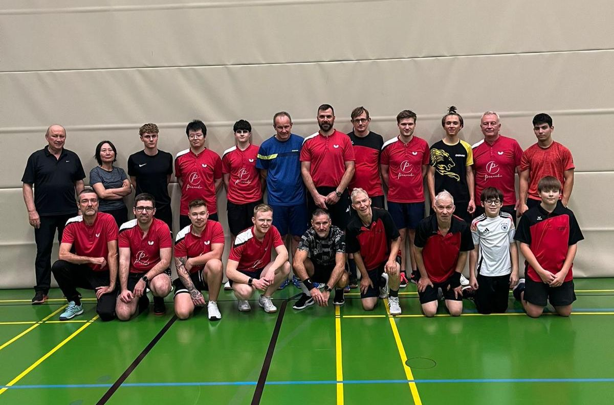

Der TTC Lauchringen nimmt in der Saison 2025/26 mit drei Herrenmannschaften am Punktspielbetrieb des Tischtennisverbandes Baden-Württemberg teil.

TTC Lauchringen – Saison 2025/26
Unsere erste Herrenmannschaft spielt in der Kreisklasse A. Aktuelle Tabelle, Spielpläne und Ergebnisse direkt bei mytischtennis.de.
Tabelle & Spielplan →Die zweite Herrenmannschaft spielt in der Kreisklasse C und bietet auch Spielern mit weniger Wettkampferfahrung eine Heimat.
Tabelle & Spielplan →Die dritte Herrenmannschaft bietet auch Spielern mit weniger Wettkampferfahrung einen Einstieg in den Mannschaftsspielbetrieb.
Tabelle & Spielplan →